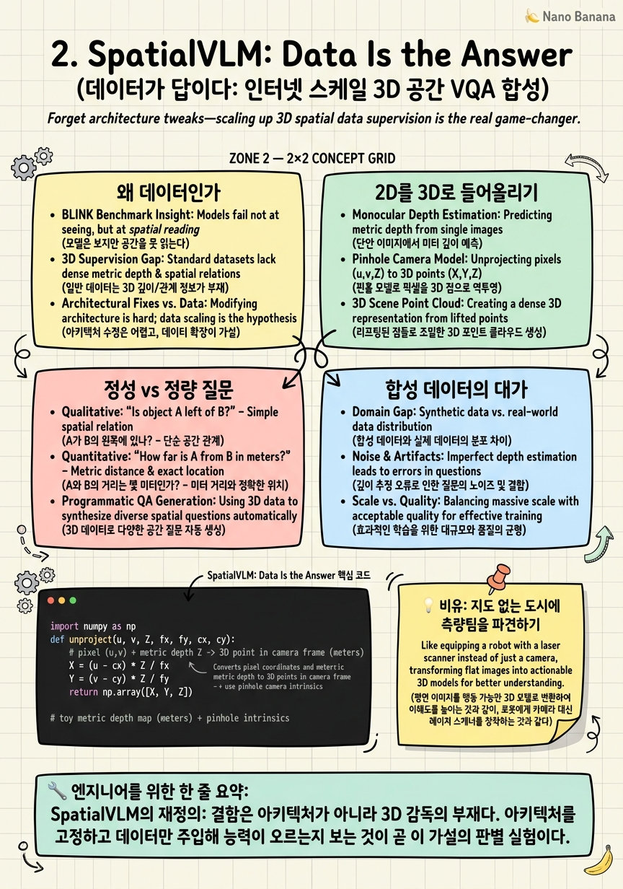

SpatialVLM: Data Is the Answer
2024년 1월, Google DeepMind의 SpatialVLM은 도발적으로 단순한 가설로 시작했다. 모델이 '컵이 접시보다 가까운가?'에 답하지 못하는 이유는 뇌 구조가 나빠서가 아니라, 태어나서 그런 질문을 한 번도 본 적이 없기 때문이라는 것. 이 한 문장이 공간 추론 연구를 아키텍처 경쟁에서 데이터 파이프라인 경쟁으로 재편했다.

🎯 학습 목표
- 왜 SpatialVLM이 아키텍처를 건드리지 않고 데이터만으로 공간 능력을 주입할 수 있었는지 설명할 수 있다.
- monocular depth와 camera intrinsics로 2D 픽셀을 metric 3D 점으로 un-project하는 수식과 코드를 재현할 수 있다.
- qualitative(정성) 술어형 질문과 quantitative(정량) 미터형 질문의 생성 방식과 평가 지표 차이를 구분할 수 있다.
- 합성 데이터의 품질 상한이 depth·detector 모듈에 의해 어떻게 결정되는지, 그리고 RGB-only·whole-image 한계가 다음 세대(ch3/ch4)를 어떻게 예고하는지 논증할 수 있다.
이전 장 BLINK는 진단을 내렸다. VLM은 보되(see) 지각하지 못한다(perceive). 그런데 진단은 처방이 아니다. 왜 지각하지 못하는가, 그리고 무엇을 바꿔야 고쳐지는가는 열린 질문으로 남았다. 대부분의 연구자가 본능적으로 아키텍처를 의심하던 시기에, SpatialVLM은 정반대 방향을 가리켰다.
SpatialVLM(2401.12168, Boyuan Chen 외, Google DeepMind, CVPR 2024)의 주장은 이렇다. 공간 무지는 representational한 결함이 아니라 supervision의 부재다. 인터넷 규모의 이미지-캡션 데이터 어디에도 '이 두 물체가 몇 미터 떨어져 있는가' 같은 3D metric 정보는 라벨링되어 있지 않다. 모델은 배운 적 없는 것을 못 할 뿐이다. 그렇다면 그 라벨을 자동으로, 대규모로 만들어내면 된다.
이 장은 SpatialVLM의 실제 기여인 데이터 합성 레시피를 해부한다. 2D 웹 이미지에서 시작해 open-vocabulary detection, monocular metric depth, camera intrinsics를 결합하여 픽셀을 metric-scale 3D point cloud로 들어올리고, 거기서 기하학적으로 공간 관계를 계산해 20억 개의 VQA pair를 뽑아낸다. RGB in, text out — 아키텍처는 표준 VLM 그대로다. 우리는 이 파이프라인의 각 단계, 정성·정량 질문의 차이, 그리고 이 방식이 필연적으로 물려받는 noise ceiling까지 따라간다.
핵심 내용
왜 데이터인가
BLINK가 던진 통찰은 '모델이 못 본다'가 아니라 '보고도 공간을 읽어내지 못한다'였다. 문제는 이 진단을 어떤 층위의 결함으로 귀속시키느냐다. 두 가지 상반된 가설이 가능하다. 하나는 표현의 문제, 즉 2D encoder가 3D 기하를 담을 수 없다는 구조적 병목(projection bottleneck)이다. 다른 하나는 감독의 문제, 즉 구조는 충분하지만 3D를 가르친 적이 없다는 것이다.
SpatialVLM은 후자에 베팅했다. 근거는 인간의 발달에서 왔다. 사람도 3D 공간 감각을 타고나기보다 신체적 경험을 통한 방대한 관찰로 획득한다. VLM에게 부족한 것은 뉴런이 아니라 그 '경험'에 해당하는 데이터라는 관점이다. 이 재정의는 실용적으로도 매력적이다. 아키텍처를 바꾸면 사전학습을 다시 해야 하지만, 데이터를 바꾸면 기존 스택에 co-training으로 얹을 수 있다.
논문의 표현을 빌리면 문제의 무게중심은 모델에서 데이터로 옮겨간다.
The key bottleneck ... is not the design of the network architecture, but rather the lack of spatial reasoning data.
병목은 네트워크 아키텍처 설계가 아니라 공간 추론 데이터의 부재라는 뜻이다.
이 프레이밍의 값어치는 검증 가능성에 있다. 만약 데이터가 원인이라면, 순수하게 데이터만 주입하고 아키텍처를 고정한 채 능력이 올라가는지 보면 가설이 판별된다. SpatialVLM 전체가 바로 이 대조 실험이다. RGB만 입력받는 표준 VLM에 합성 공간 VQA를 섞어 학습시키자, 정량 거리 추정에서 near-zero였던 baseline이 유의미하게 살아났다. 데이터가 답이라는 명제의 실험적 증거다.
2D를 3D로 들어올리기
합성의 심장은 리프팅(lifting) 파이프라인이다. 목표는 라벨이 전혀 없는 2D 웹 이미지 한 장에서 metric-scale의 3D 장면을 복원해, 물체 사이의 진짜 거리·방향을 기하학적으로 계산하는 것이다.
첫 단계는 장면을 개별 instance로 쪼개는 것이다. Open-vocabulary detection과 segmentation을 돌려 임의의 어휘로 지칭되는 물체들(예: 'the red mug', 'the laptop')의 마스크와 bounding box를 얻는다. 이것이 이후 모든 3D 계산의 단위가 된다.
둘째, 각 픽셀에 깊이를 부여한다. 단일 이미지이므로 stereo나 LiDAR가 없다. 대신 monocular metric depth estimation으로 픽셀별 metric depth \(Z\)(미터)를 추정한다. '메트릭'이라는 점이 결정적이다. 상대 깊이가 아니라 실제 미터 스케일이어야 '몇 미터 떨어졌는가'라는 정량 질문의 정답을 만들 수 있다.
셋째, 카메라를 복원한다. 웹 이미지에는 EXIF조차 없는 경우가 많으므로 camera-intrinsics estimation/calibration으로 초점거리 \(f_x,f_y\)와 주점 \(c_x,c_y\)를 추정한다. 깊이와 intrinsics가 갖춰지면 각 픽셀 \((u,v)\)를 camera frame의 3D 점으로 un-project할 수 있다.
\[X = (u-c_x)\,\frac{Z}{f_x},\qquad Y = (v-c_y)\,\frac{Z}{f_y},\qquad Z = \text{metric depth}(u,v)\]
각 instance의 마스크 픽셀들을 이렇게 un-project하면 metric-scale의 3D point cloud가 나온다. outlier removal로 깊이 추정 오차가 만든 튀는 점을 걷어낸 뒤, 두 물체의 point cloud로부터 중심 간 거리, 수평/수직 상대 위치, 높이차 같은 공간 관계를 순수 기하로 계산한다. 마지막으로 이 기하 사실을 자연어 질문-답변으로 렌더링한다. 이 6단계가 라벨 없는 웹 이미지를 3D-supervised VQA로 바꾸는 전 과정이다.
정성 vs 정량 질문
3D 관계가 손에 들어오면 질문을 만들 차례다. SpatialVLM은 template과 LLM을 결합해 질문을 두 부류로 합성한다. 이 이분법은 이후 모든 공간 벤치마크의 문법이 된다.
정성(qualitative) 질문은 이항 술어(binary predicate)를 묻는다. '컵이 접시보다 가까운가?', 'A가 B의 왼쪽인가?', '선반이 책상보다 위인가?'처럼 참/거짓 또는 방향 라벨로 답한다. 3D 좌표에서 부등호 비교 한 번으로 정답이 결정되므로 라벨 신뢰도가 상대적으로 높다.
정량(quantitative) 질문은 metric 값을 묻는다. '이 두 물체는 몇 미터 떨어져 있는가?', '이 문의 폭은 얼마인가?'처럼 실수 답을 요구한다. 정답은 point cloud 간 Euclidean 거리 같은 연속 값이며, 그래서 depth의 절대 스케일 정확도에 직접 노출된다. 이 부류가 진짜 어려운 능력이고, baseline VLM이 사실상 0점을 받던 지점이다.
| 질문 부류 | 예시 Q | 정답 형태 | 기하 연산 | 평가 방식 |
|---|---|---|---|---|
| Qualitative | "컵이 접시보다 카메라에 가까운가?" | 예/아니오, 방향 라벨 | 좌표 부등호 비교 | 정확도(accuracy) |
| Qualitative | "A는 B의 왼쪽인가?" | left / right | \(X_A < X_B\) | 정확도 |
| Quantitative | "A와 B는 몇 미터 떨어져 있는가?" | 실수(미터) | \(\lVert p_A - p_B\rVert_2\) | GT의 0.5×–2× 이내 비율 |
| Quantitative | "이 물체의 높이는?" | 실수(미터) | point cloud 범위 | GT의 0.5×–2× 이내 비율 |
평가 지표의 비대칭성에 주목하라. 정성은 맞다/틀리다의 정확도로 채점되지만, 정량은 단일 정답을 강요할 수 없다. depth 자체가 근사이므로 GT도 근사다. 그래서 SpatialVLM은 관대한 척도를 쓴다. 예측이 ground truth의 0.5배에서 2배 사이면 맞은 것으로 본다. 이 완화된 척도 위에서 co-trained 모델은 정량 거리 질문의 37.2%를 GT의 0.5×–2× 범위 안에 맞혔다. baseline이 near-zero였음을 감안하면 능력이 없던 곳에서 능력이 생긴 것이다.
한 걸음 더 나아가, 이렇게 얻은 SpatialVLM은 외부 LLM에게 '공간 계산기(spatial calculator)'로 노출된다. LLM이 chain-of-thought로 다단계 기하 질의를 쪼개 SpatialVLM에 순차 질의하면, 단일 질문을 넘어선 multi-hop 공간 추론이 가능해진다. 이는 robotics에서 dense reward나 공간 추론기(spatial reasoner)로 쓰이는 응용으로 이어진다.
합성 데이터의 대가
이 레시피는 공짜가 아니다. 합성 라벨의 품질은 그 라벨을 만든 모듈들의 품질에 의해 위에서 눌린다. 이것이 noise ceiling이다.
정량 질문의 정답은 monocular metric depth의 절대 스케일에 전적으로 의존한다. depth가 10% 틀리면 거리 라벨도 10% 틀린다. 마찬가지로 detection이 물체를 놓치거나 마스크가 옆 물체를 물면, un-project된 point cloud가 오염되어 관계 계산이 틀어진다. 즉 SpatialVLM이 배우는 '정답'은 depth·detector·intrinsics 추정의 오차를 그대로 상속한다. 0.5×–2×라는 관대한 평가 척도 자체가 이 근사성을 인정하는 장치다.
두 번째 대가는 입력 형태에서 온다. 데이터 생성 파이프라인은 depth와 3D를 풍부하게 쓰지만, 학습된 모델의 추론 시점 입력은 RGB뿐이다(RGB-only). 3D 감각은 depth를 실제로 읽어서가 아니라, depth로 만든 라벨을 통해 간접적으로 내재화된 것이다. 추론 때 진짜 depth 채널이 없으므로 모델은 여전히 단일 RGB로부터 거리를 '상상'해야 한다.
세 번째는 질의 granularity다. SpatialVLM은 whole-image로 동작한다. 특정 영역이나 물체를 좌표·박스로 지목해 묻는 region-level prompting이 없다. 장면에 같은 종류의 물체가 여럿이면 '어느 컵'인지 지시할 언어적 앵커가 부족하다.
이 세 대가는 우연이 아니라 다음 두 장의 문제의식을 정확히 규정한다. RGB-only와 whole-image라는 쌍둥이 한계는 SpatialRGPT로 이어진다. region grounding으로 '어느 물체'를 지목하게 하고, depth를 학습 신호가 아니라 아키텍처에 주입하는 plugin으로 끌어들인다. 나아가 depth를 feature로 녹이는 대신 아예 입력으로 읽고 도구로 질의하려는 시도는 SpatialBot의 embodied 갈래로 분기한다. SpatialVLM은 데이터가 답이라는 것을 증명했지만, 동시에 데이터만으로는 넘을 수 없는 천장이 어디인지도 드러냈다.
💡 비유로 이해하기
인터넷의 이미지 20억 장을, 좌표가 하나도 적히지 않은 도시 항공사진 더미라고 상상하자. 사진마다 건물과 도로는 보이지만 '이 건물과 저 건물이 몇 미터 떨어졌는가'는 어디에도 적혀 있지 않다. VLM을 이 사진들로만 키우면, 마치 항공사진만 외운 사람처럼 무엇이 있는지는 알아도 거리는 감을 못 잡는다.
SpatialVLM의 데이터 파이프라인은 각 사진에 자동 측량팀을 붙이는 일이다. detection은 '여기 건물, 저기 도로'라고 대상을 찍고, monocular depth는 카메라로부터의 거리를 재고, intrinsics는 렌즈의 배율을 보정한다. 이 셋을 합치면 평평한 사진 위 점 하나하나에 실제 미터 좌표가 매겨진다. 측량팀은 그 좌표로 '두 건물은 42미터 떨어져 있다'는 사실 카드를 수십억 장 찍어낸다.
단, 이 측량팀은 완벽하지 않다. depth 자로 잰 거리에는 오차가 있고, 안개(occlusion)에 물체를 놓치기도 한다. 그래서 그들이 찍어낸 카드는 대체로 옳되 정밀하진 않다. VLM은 이 근사 측량 카드를 교과서 삼아 공간을 배운다. 교과서가 근사인 만큼 학생의 정밀도에도 천장이 생기는 것은 당연한 대가다.
💻 코드 예시
리프팅 파이프라인의 심장인 un-projection을 최소 구현으로 재현한다. metric depth map과 camera intrinsics가 주어졌을 때, 두 픽셀을 3D로 들어올려 미터 단위 Euclidean 거리를 계산한다. 이 거리가 곧 정량 VQA의 ground-truth 라벨이 되고, x좌표 비교가 정성 라벨이 된다. numpy만으로 실행 가능하다.
import numpy as np
def unproject(u, v, Z, fx, fy, cx, cy):
# pixel (u,v) + metric depth Z -> 3D point in camera frame (meters)
X = (u - cx) * Z / fx
Y = (v - cy) * Z / fy
return np.array([X, Y, Z])
# toy metric depth map (meters) + pinhole intrinsics
depth = np.array([
[1.20, 1.25, 2.90, 3.10],
[1.18, 1.22, 2.85, 3.05],
[1.40, 1.45, 2.70, 2.95],
[1.55, 1.60, 2.60, 2.88],
])
H, W = depth.shape
fx = fy = 5.2
cx, cy = (W - 1) / 2, (H - 1) / 2
# two detected instance centroids in pixel space
mug_px = (1, 1) # (u, v)
lap_px = (3, 2)
p_mug = unproject(*mug_px, depth[mug_px[1], mug_px[0]], fx, fy, cx, cy)
p_lap = unproject(*lap_px, depth[lap_px[1], lap_px[0]], fx, fy, cx, cy)
dist = np.linalg.norm(p_mug - p_lap) # quantitative GT label
qual = "left of" if p_mug[0] < p_lap[0] else "right of" # qualitative label
print("mug 3D (m):", np.round(p_mug, 3))
print("laptop 3D (m):", np.round(p_lap, 3))
print(f"Q(quant): 'how far apart?' -> {dist:.2f} m")
print(f"Q(qual): 'mug relative to laptop?' -> {qual}")unproject는 브리프의 수식 \(X=(u-c_x)Z/f_x,\ Y=(v-c_y)Z/f_y\)를 그대로 옮긴 것이다. 여기서 \(Z\)가 상대 깊이가 아니라 metric depth라는 점이 미터 단위 라벨을 가능하게 하는 전제다. 두 물체 centroid를 각각 3D로 들어올린 뒤 np.linalg.norm으로 Euclidean 거리를 재면, 그 실수 값이 '몇 미터 떨어져 있는가' 정량 질문의 정답이 된다. 같은 3D 좌표의 x성분을 부등호 비교하면 'left of / right of' 정성 라벨이 나온다. 이 두 줄이 실제 SpatialVLM 파이프라인이 이미지 한 장에서 뽑아내는 supervision의 원형이다. 실전에서는 단일 centroid 대신 마스크 전체 픽셀을 un-project해 point cloud를 만들고 outlier를 제거한 뒤 관계를 계산하지만, 기하의 본질은 이 스니펫과 동일하다.
🏭 현업에서의 평가
✅ 시니어가 보는 것
- 능력 결함을 아키텍처/감독/데이터 중 어느 층위의 문제로 귀속시킬지 근거를 대고 판단하는 능력. SpatialVLM처럼 '데이터 문제'로 프레이밍하고 그것을 판별하는 대조 실험을 설계할 수 있는가.
- un-projection·intrinsics·metric depth를 수식과 코드로 정확히 다루는지. 상대 depth와 metric depth의 차이가 왜 정량 라벨의 사활을 가르는지 설명할 수 있는가.
- 합성 라벨의 noise ceiling을 정량적으로 사고하는지. 왜 0.5×–2× 같은 관대한 평가 척도를 쓰는지, 그 척도가 무엇을 인정하는 것인지 이해하는가.
⚠️ 레드 플래그
- '공간 추론이 안 되니 3D encoder를 새로 붙이자'로 곧장 점프하고, 데이터 감독의 부재라는 더 싼 가설을 검증조차 하지 않는 태도.
- 합성 데이터를 무결한 ground truth로 취급. depth·detector 오차가 라벨에 상속된다는 점, 즉 학습 상한이 파이프라인 모듈로 결정된다는 사실을 간과하는 경우.
- 정성 정확도와 정량 오차를 같은 지표로 뭉뚱그리거나, RGB-only 모델이 추론 시점에 실제 depth를 읽는다고 오해하는 경우.
🎤 예상 인터뷰 질문 (클릭하면 모범답안)
SpatialVLM은 아키텍처를 바꾸지 않고 어떻게 표준 VLM에 공간 능력을 주입했는가? 이 접근의 핵심 가정은 무엇인가?
핵심 가정은 공간 무지가 아키텍처 결함이 아니라 3D 감독 데이터의 부재라는 것입니다. 그래서 2D 웹 이미지를 detection·monocular metric depth·intrinsics로 metric 3D point cloud로 리프팅해 기하학적으로 공간 관계를 계산하고, 이를 20억 개의 VQA로 합성해 표준 VLM에 co-training으로 섞습니다. 입력은 여전히 RGB in, text out이며 네트워크 구조는 그대로입니다. 데이터만 바꿔 near-zero였던 정량 거리 성능이 살아났다는 사실 자체가 '데이터가 원인'이라는 가설의 대조 실험 역할을 합니다.
픽셀을 metric 3D 좌표로 un-project하는 수식을 쓰고, 왜 'metric' depth가 필수인지 설명하라.
camera frame에서 \(X=(u-c_x)Z/f_x\), \(Y=(v-c_y)Z/f_y\)이고 \(Z\)는 해당 픽셀의 metric depth입니다. 여기서 \(Z\)가 상대 깊이가 아니라 실제 미터 스케일이어야 두 점의 Euclidean 거리 \(\lVert p_A-p_B\rVert_2\)가 '몇 미터'라는 물리 단위 정답이 됩니다. 상대 depth만 있으면 방향·순서 같은 정성 관계는 만들 수 있어도, 정량 거리 라벨은 스케일 미지수 때문에 만들 수 없습니다. 그래서 metric depth 추정과 intrinsics 복원이 파이프라인의 사활을 가릅니다.
SpatialVLM 방식으로 생성한 데이터의 품질 상한은 무엇이 결정하며, 왜 0.5×–2× 같은 평가 척도를 쓰는가?
라벨의 정답은 monocular depth·detection·intrinsics 추정에서 나오므로, 이들 모듈의 오차가 그대로 라벨에 상속됩니다. depth 스케일이 틀리면 거리 라벨이 비례해 틀리고, 마스크가 오염되면 point cloud가 오염됩니다. 즉 학습 상한은 파이프라인 모듈 품질로 눌립니다. 정량 정답 자체가 근사이므로 단일 정답 일치를 요구하는 대신, 예측이 GT의 0.5배에서 2배 이내면 맞다고 보는 관대한 척도를 씁니다. SpatialVLM은 이 척도에서 정량 거리의 37.2%를 맞혔고, 이는 근사 supervision의 본질을 인정하는 평가 설계입니다.
✨ 핵심 요약
공간 무지 = 데이터 문제
SpatialVLM의 재정의: 결함은 아키텍처가 아니라 3D 감독의 부재다. 아키텍처를 고정하고 데이터만 주입해 능력이 오르는지 보는 것이 곧 이 가설의 판별 실험이다.
리프팅 파이프라인이 진짜 기여
detection+segmentation → monocular metric depth → intrinsics → un-project → metric 3D point cloud(+outlier removal) → 기하 관계 → QA. 라벨 없는 2D를 3D-supervised VQA로 바꾸는 자동 엔진이 논문의 심장이다.
un-projection 수식
$X=(u-c_x)Z/f_x$, $Y=(v-c_y)Z/f_y$, $Z$는 metric depth. 두 점의 $\lVert p_A-p_B\rVert_2$가 정량 라벨, 좌표 부등호가 정성 라벨. metric 스케일이 정량 질문의 전제다.
정성 vs 정량
정성은 이항 술어(closer/left-of/above)를 정확도로, 정량은 미터 값을 GT의 0.5×–2× 이내 비율로 평가한다. 정량이 baseline near-zero였던 진짜 어려운 능력이다.
규모: 2B VQA / 10M 이미지
template+LLM으로 1천만 장의 웹 이미지에서 20억 개의 공간 VQA를 합성. 이 규모 위에서 정량 거리 정답률 37.2%(0.5×–2×)를 달성했다.
공간 계산기 + CoT
외부 LLM이 SpatialVLM을 queryable spatial calculator로 두고 chain-of-thought로 다단계 기하를 쪼개 질의하면 multi-hop 추론이 가능해지고, robotics의 dense reward로도 쓰인다.
noise ceiling
라벨은 depth·detector·intrinsics만큼만 정확하다. 오차가 라벨에 상속되므로 학습 상한이 파이프라인 모듈로 결정되고, 0.5×–2× 척도가 이 근사성을 인정한다.
다음을 예고하는 두 한계
RGB-only(추론 시 depth 없음)와 whole-image(region prompting 없음). 이 쌍둥이 한계가 SpatialRGPT의 region grounding+depth-plugin과 SpatialBot의 depth-as-input을 직접 규정한다.